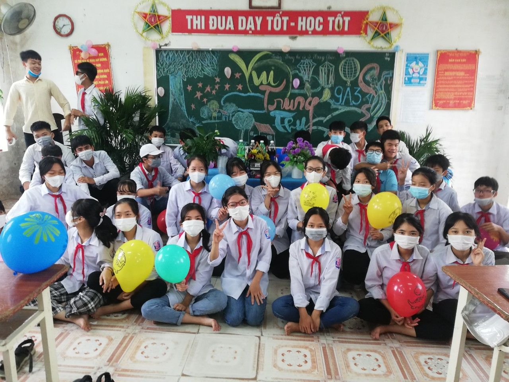

Vui tết trung thu an toàn, ý nghĩa tại trường THCS Trọng Quan
Tết Trung thu đã đến trong bối cảnh dịch bệnh COVID-19 vẫn diễn biến phức tạp, vì thế tết trung thu năm nay thật đặc biệt, sẽ không có các hoạt động bày cỗ, rước đèn ông sao, múa hát, vui văn nghệ… mà thay vào đó trường THCS Trọng Quan có cách tổ chức Tết Trung thu cho các em phù hợp, bảo đảm các quy định phòng, chống dịch.
Với tên gọi Tết đoàn viên, Trung thu hàng năm là dịp để các thành viên trong mỗi gia đình ngồi quây quần ngắm trăng bên mâm cỗ với các loại bánh, quả đặc trưng của mùa thu. Đây cũng là ngày mà con trẻ háo hức, trông chờ nhất trong năm, được xúng xính trong quần áo đẹp cùng bạn bè rước đèn lồng, phá cỗ, xem múa lân, múa rồng… Tuy nhiên, mùa trăng năm nay trong điều kiện ảnh hưởng bởi dịch bệnh COVID- 19, các hoạt động vui chơi, giải trí an toàn, lành mạnh tạm dừng tổ chức để đảm bảo công tác phòng, chống dịch bệnh. Trường THCS Trọng Quan đã lựa chọn các hoạt động vui hội trăng rằm phù hợp với điều kiện thực tế nhưng vẫn giữ được các giá trị văn hóa truyền thống.
Dưới sự chỉ đạo của BGH nhà trường, Trung thu năm nay học sinh các lớp sẽ tổ chức tết trung thu ngay tại lớp học, các thầy cô giáo trong nhà trường đã lên kế hoạch chuẩn bị cơ sở vật chất để tổ chức tết trung thu tại lớp học.
Trong các lớp học, các đội viên trong lớp đã sửa soạn mâm cỗ trung thu, những món đồ chơi truyền thống vừa đảm bảo giáo dục truyền thống vừa đảm bảo phòng, chống dịch. Nắm bắt tình hình cụ thể cùng mong muốn con trẻ có Tết Trung thu trọn vẹn yêu thương bên gia đình, hội phụ huynh các lớp cũng tham gia tích cực như hỗ trợ trang trí lớp, khuyên góp tiền ủng hộ trung thu cho lớp.
Nhân dịp Tết Trung thu và Tháng hành động vì trẻ em với chủ đề “Chung tay bảo đảm thực hiện quyền trẻ em, bảo vệ trẻ em trong thiên tai, dịch bệnh”, trong ngày 21/9, Lãnh đạo Đảng, chính quyền, đoàn xã Trọng Quan, gồm các đồng chí Trần Thị Tấn Bí thư xã, đồng chí Phạm Sơn Hải - chủ tịch UBND xã, đồng chí Đỗ Mạnh Dũng bí thư đoàn xã cùng trưởng các đoàn thể trong xã đã tặng quà các em học sinh có hoàn cảnh khó khăn trong địa bàn xã Trọng Quan.
Trung thu năm nay là Trung thu đặc biệt nhưng đội viên của trường THCS Trọng Quan, được nhà trường, gia đình chăm lo, bảo vệ an toàn trong dịch bệnh. Tin tưởng rằng, dịch bệnh sẽ sớm được kiểm soát để những mùa Trung thu sau, các bạn đội viên được sống trọn vẹn trong không khí rộn ràng, tưng bừng, đoàn viên, hạnh phúc.
